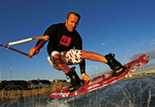

Wake Pro's
Ben Greenwood
Ben Greenwood, comes across as a very humble and low-key individual when you first meet him, but as soon as you see him ride or engage him in a real conversation it is evident that there is a well thought out plan and years of intense study behind everything he does. Just below the approachable surface is a lifetime of strong opinions and insight. This balance makes him just as comfortable directing the Quiksilver team and company relationship with the sport as he is sitting in the boat with the boys enjoying it.
Athletically, his riding is the perfect example of what wakeboarding should be; an exercise in both athleticism and poise. Technical proficiency is a subtle and often times underappreciated art in our realm. Not for Greenwood, every grab is exact, every movement controlled and every move made to look much easier than it is. Yet he is humble about his riding, and that is coupled with a level of professionalism (not uptight, jocko type professionalism, but just smart, logical, ambassador, ride-perfectly-every-time type of professionalism) that most should aspire to. Greenwood's well-roundedness is why he was selected as Alliance Wakeboard Magazine's Rider of the Year for 2005. He is regarded as one of the best riders in the world and likely the only one of them that could help guide the Quiksilver brand and team to the front of the activity.
Source:Quiksilver